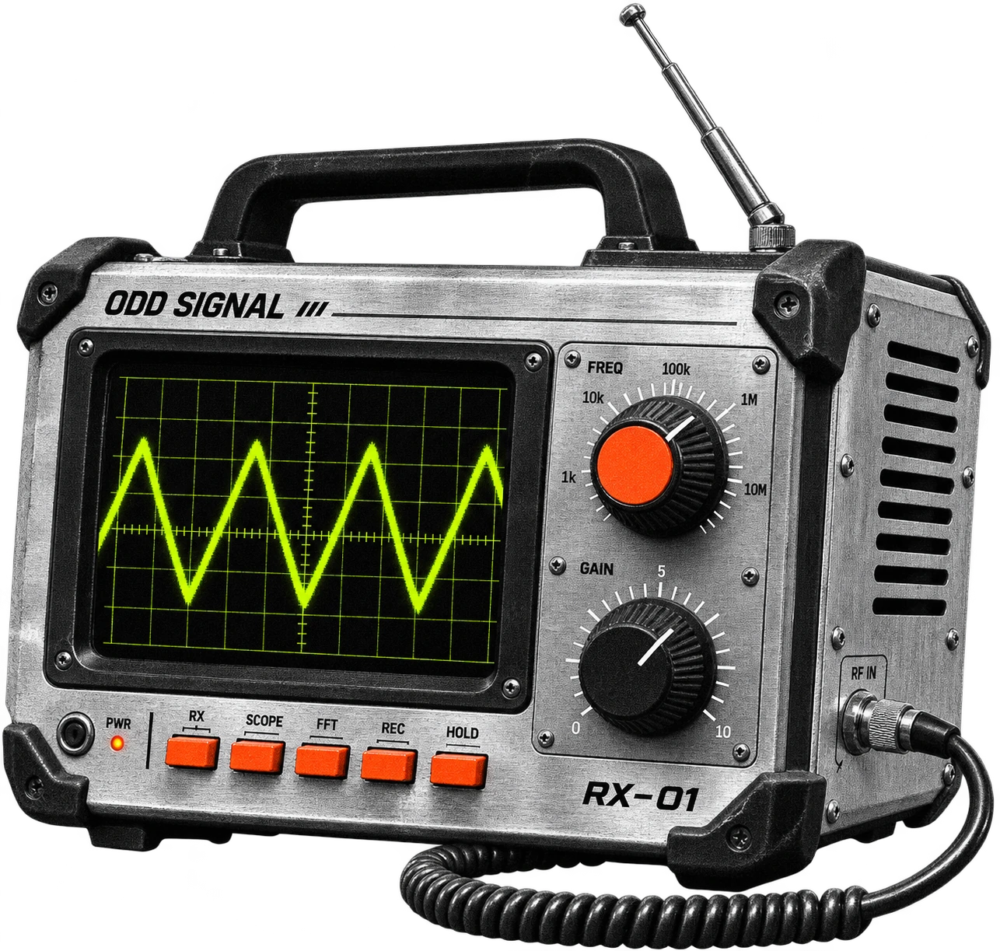

Аудиоинструмент / Браузер
Patchbay
Луп-машина на восемь шагов — для бита, который засел в голове.
Независимая студия вайб-кодинга
Полфразы. Странная одержимость. Набросок на салфетке. Мы настраиваем сырые идеи, пока они не станут работающим софтом.

Ручки — настройка · Корпус — поворот
Выходной сигнал
Аудиоинструмент / Браузер
Луп-машина на восемь шагов — для бита, который засел в голове.
Печатная игрушка / Браузер
Скормите ему фразу. Заберите цифровой постер карманного формата.
Входное гнездо
Выберите отправную точку. Примерно такое мы любим находить во входящих.
Входящий сигнал
«Радиостанция из звуков по дороге домой.»
Расшифровка: что соберём
Крошечная звуковая карта. Коснитесь перекрёстка — и услышите улицу, которая там живёт.
Процесс студии
Вживаемся в идею, обмениваемся референсами и находим то самое действие, после которого всё щёлкнет. Вы получаете объём работ и фиксированную цену.
Отдаём вам в руки черновую сборку. Вы кликаете, ломаете и рассказываете, какие места кажутся живыми. Под них мы и настраиваем следующую версию.
Проверяем крайние случаи и выпускаем согласованную сборку. Вы получаете исходники, заметки по запуску и разбор проекта — чтобы штука жила и без нас.
Услуги и цены
Одна странная идея, одно ключевое взаимодействие, один играбельный прототип, который можно пустить по рукам.
900 $Сфокусированный веб-инструмент или интерактивный сайт: настроен под телефоны и готов к запуску.
от 2 800 $Небольшой программный продукт со связанными сценариями, хранением данных и передачей проекта.
от 6 500 $Частота студии
Почти у каждой идеи есть деталь, из-за которой её трудно объяснить. Звук, жест, правило, которое становится понятным, только когда попробуешь. С неё мы и начинаем сборку.
Перед выходом в эфир
Хватит одной вещи, которой вам не хватает в мире. Голосовое, набросок или фраза о том, кто этим будет пользоваться, — уже есть с чего начать.
Мы проектируем, делая. С помощью ИИ пишем код, чтобы сразу проверить самое рискованное взаимодействие, а потом правим, тестируем и доводим, пока оно не начнёт уверенно работать у вас в руках.
После финальной оплаты дизайн и код, сделанные на заказ, принадлежат вам. Сторонние компоненты и их лицензии мы перечисляем при передаче проекта.
Да. Расскажите, какая часть буксует и на каком стеке всё собрано. Прежде чем оценивать доработку, мы проверим, подходит ли нам задача.
Идёт приём
Расскажите, что не выходит у вас из головы. Пары строк хватит.
hello@oddsignal.example